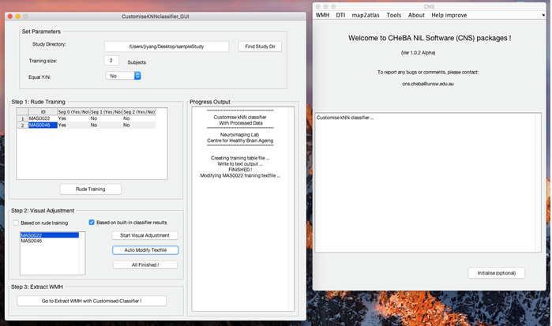

In order to customize kNN classifier, the data need to go through standard WMH segmentation procedures using UBO Detector.
Step 1: From CNS GUI, select WMH -> Customise kNN classifier
Step 2: Find the study folder by clicking Find Study Dir
Step 3: Specify the number of subjects that will be included in the training set.
Step 4: Specify whether you would like the number of WMH and non-WMH to be equal.
Step 5: Type in the ID for each subject that will be included in the training set.
Step 6: Press Rude Training. From our experiences, after FSL FAST segmentation of FLAIR scans, the majority of WMH clusters are included in seg0. Therefore, by default, we preliminarily label all clusters in seg0 as WMH, and those in seg1 and seg2 as non-WMH.
Step 7: Choose to manually edit based on rude training results (i.e. with all seg0 clusters regarded as WMH), or WMH segmentation results using the built-in training set and classifier.
Step 8: Select one of the IDs from the specified training set, and click Start Visual Adjustment. FSLVIEW will be started and load the WMH map/mask selected from Step 6, which is superimposed onto FLAIR image in DARTEL space. Edit the WMH mask using the editing tools available in FSLVIEW. After finishing editing, save the edited WMH mask, and close FSLVIEW. Please be noted that the left/right orientation may be swapped after each second save in FSLVIEW. Therefore, please try to edit the whole image and save once.
Step 9: Click Auto Modify Textfile.
Step 10: Find manually edited WMH mask
Step 11: Specify the DARTEL template used for WMH segmentation carried out before customizing kNN classifier.
Step 12: Click Modify text for training, and close the autoModTxt dialog after finishing.
Step 13: Repeat Step 8-12 for each of the training IDs.
Step 14: Click All Finished.
Step 15: Click Go to Extract WMH with Customised Classifier. Remember to select "customised" for kNN training set in UBO Detector.